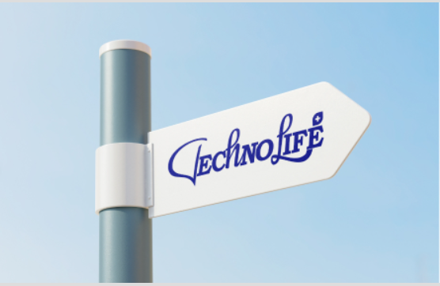

Biz haqimizda
TechnoLife – buyuk maqsadli va faol tashkilot bo‘lib, uning maqsadi har birimizning hayotimizda texnikaviy qulayliklarni berish.
Biz Evropa va boshqa mamlakatlarda dori-darmonlar va tibbiy buyumlarni import qilamiz, tarqatamiz, ishlab chiqaramiz va reklama qilamiz.
Dori vositalari va tibbiy buyumlarni tarqatish, ishlab chiqarish va ro'yxatdan o'tkazish
Biz dorixonalar, shifokorlar, klinikalar, sog'liqni saqlash markazlari, shifoxonalar va tadqiqot institutlari bilan ishlaymiz,
Biz dori vositalari va tibbiy buyumlarning eksklyuziv distribyutori va ishlab chiqaruvchisi sifatida samarali xizmatlarni taqdim etamiz.
Asosiy maqsad sifatli, tez va samarali xizmat va mahsulotni taqdim etishdir..
Biz o'z mijozlarimizga yuqorida aytib o'tilgan dori vositalarini tarqatishdan iborat to'liq xizmatni taklif etamiz,
ularning ishlab chiqarilishi va sog'liq sug'urtasidan qoplash imkoniyati. Tabiiyki, giyohvand moddalarni ro'yxatga olish ham hal qiluvchi ahamiyatga ega.
Biz Chexiya Respublikasida dori vositalarining moslashuvchan ishlab chiqaruvchilari va distribyutorlarimiz..
Bizning TLCargo logistika tarmog'imiz tufayli, bu sizga kerak bo'lgan hamma narsani tez va kerak bo'lganda etkazib beradi,
biz ishonchli distribyutor va ishlab chiqaruvchimiz.
Bizning ixtiyorimizda dori-darmonlarning keng assortimenti mavjud, biz ham o'zimiz ishlab chiqaramiz va
biz sizga mavjud dori-darmonlar yoki tibbiy buyumlar haqidagi barcha ma'lumotlarni taqdim etishdan mamnun bo'lamiz.
Ijtimoiy sahifalarimiz
 Instagram
Instagram
 Facebook
Facebook
 You tobe
+998 91 600 66 18
You tobe
+998 91 600 66 18